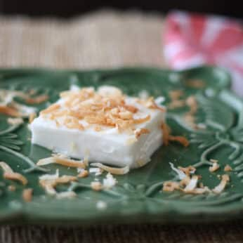

Our Latest Recipes

Delicious Poke Bowl
A refreshing and healthy Hawaiian dish made with fish and rice.
Click here for link to videoHere's the full recipe for making this amazing Hawaiian dish...
Ingredients:
- Fresh fish (salmon or tuna)
- Rice
- Seaweed
- Vegetables (avocado, cucumber, etc.)
Instructions:
- Prepare the rice...
- Cut the fish...
- Assemble the bowl...

Traditional Haupia
A creamy coconut dessert that's a Hawaiian favorite.
Click here for link to videoHere's the full recipe for making this amazing Hawaiian dessert...
Ingredients:
- 1 - 13oz can Thai coconut milk
- 6 tbsp sugar
- 8 tbsp cornstarch
- 3/4 cup water
- 1/2 tsp vanilla extract
- 1/4 cup toasted coconut flakes
Instructions:
Combine sugar, cornstarch and water in a saucepan and whisk to combine.
2.Add coconut milk & vanilla then stir again.
3.Cook over medium low heat until thickened for 10-15 minutes.
4.The mixture will be thick enough to pull away from pan.
5.Pour into an 8" square pan and cover with lid or saran wrap.
6.Chill in the refrigerator until firm, 8-24 hours.
7.Slice into squares and top with toasted coconut before serving. Enjoy!